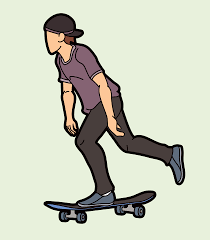
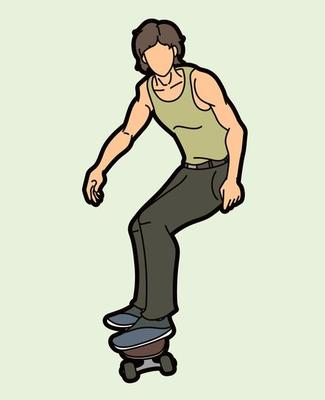

El skateboarding es un deporte que se basa en la propulsión con un skate-elemento compuesto por una tabla de madera, ejes, rodamientos y ruedas- a la vez que se realizan distintos trucos o maniobras.
¡OFERTA ESPECIAL!


BENEFICIOS
La práctica de skateboarding no solamente desarrolla tus habilidades físicas, sino que también favorece el desarrollo de tus habilidades mentales. Este deporte que no entiende de edad puede practicarse como medio de expresión creativa, como deporte de alto rendimiento o incluso como método de transporte. Sea como sea, a continuación, te contamos algunos de los beneficios de practicar skate.